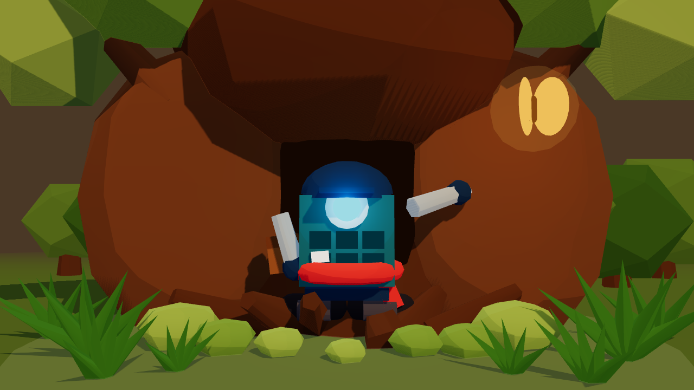
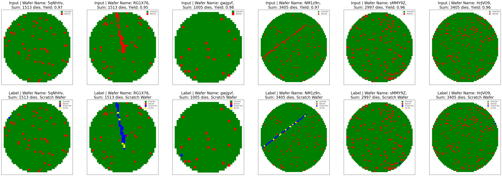
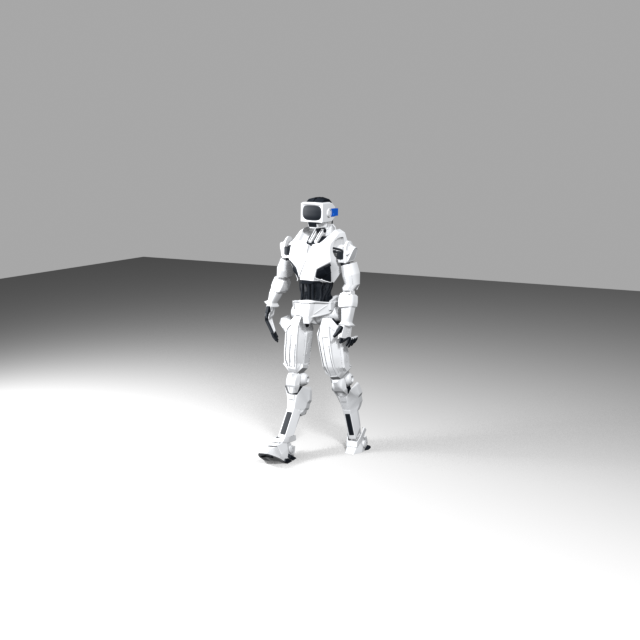
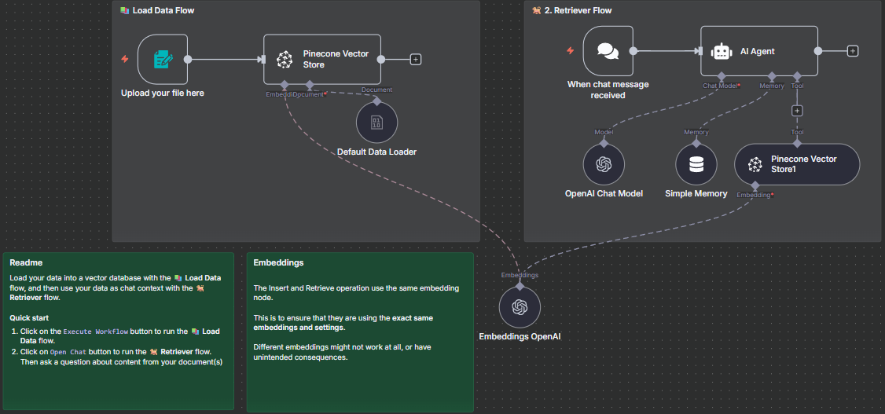
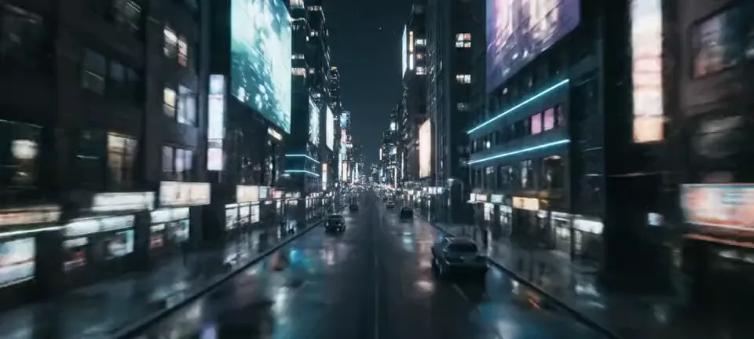
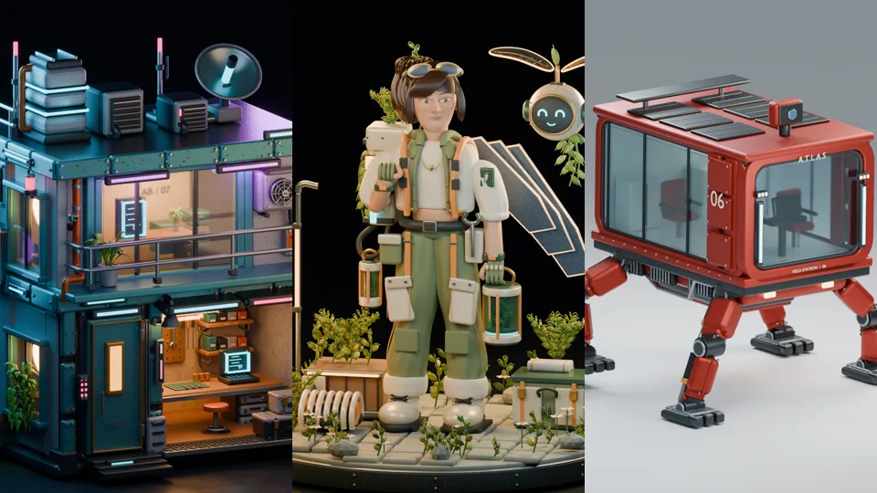

CrazyLabs
Junior AI Creative Technologist
AI automation, agentic workflows, orchestration and multimodal generation.
EXPERIENCE / EDUCATION / SKILLS
AI automation, agentic workflows, orchestration and multimodal generation.
Graduated in 2026. Computer science, data engineering, security and AI.
Pattern mining, data analytics, time-series processing and large-scale data systems.
AI education, communication, presentations, leadership and management.
Coding education, development foundations, mathematics and computer science.
AI art, 3D, print and visual experiments.
Project previews — full case studies to come.

013D & EnvironmentsWorlds, atmosphere and imagined places
Show project previewA preview slot for stylized 3d environments, using an existing portfolio image. The finished case study, process and verified results can be added here.
MOCK CASE STUDY / PREVIEW CONTENTCharacter exploration and creative imagery
Show project previewA preview slot for ai characters & visuals, using an existing portfolio image. The finished case study, process and verified results can be added here.
MOCK CASE STUDY / PREVIEW CONTENTConnecting ideas into useful workflows
Show project previewA preview slot for creative automation, using an existing portfolio image. The finished case study, process and verified results can be added here.
MOCK CASE STUDY / PREVIEW CONTENT
04Data & AnalyticsExploring patterns in semiconductor data
Show project previewA preview slot for wafer defect analysis, using an existing portfolio image. The finished case study, process and verified results can be added here.
MOCK CASE STUDY / PREVIEW CONTENT
05Games & InteractiveRobots, worlds and playful interfaces
Show project previewA preview slot for interactive experiences, using an existing portfolio image. The finished case study, process and verified results can be added here.
MOCK CASE STUDY / PREVIEW CONTENT
06AI & GenerativeFrom information to useful answers
Show project previewA preview slot for retrieval & knowledge systems, using an existing portfolio image. The finished case study, process and verified results can be added here.
MOCK CASE STUDY / PREVIEW CONTENTConsistent AI characters, stills and clips
Show project previewAI-generated portraits in one consistent studio look, plus vertical motion tests and selfie-style stills exploring how a synthetic persona can hold together across images and video.
Surreal night-sky scenes in slow motion
Show project previewSurreal night-sky scenes and edited street photos, shown as a slowly drifting gallery of landmarks under the Milky Way.

09Motion & FilmRobots, neon streets and tunnels
Show project previewShort AI-generated clips set in one neon cyberpunk world: a robot food truck, a night bazaar, a worship circle and a tunnel chase.

103D & EnvironmentsCharacters, machines and scenes
Show project previewStylized 3D work modeled and rendered in Blender: a neon repair shop, a solarpunk explorer with her drone, and a four-legged walker.
Surreal product concepts in motion
Show project previewConcept ads that put everyday objects in impossible places: cherries on ice, a toothbrush at the pyramids, a houseplant in Times Square.